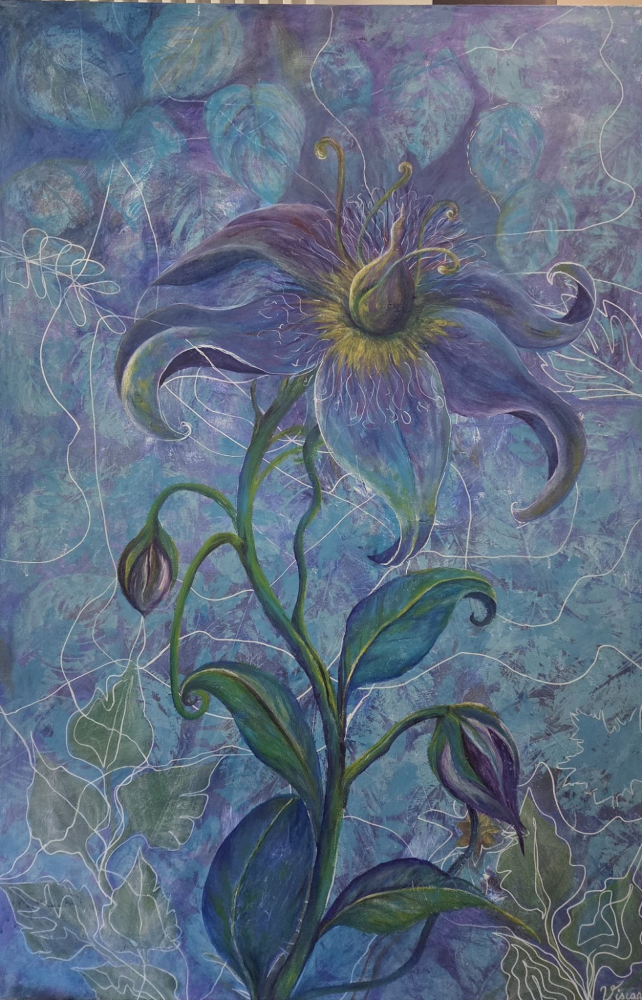
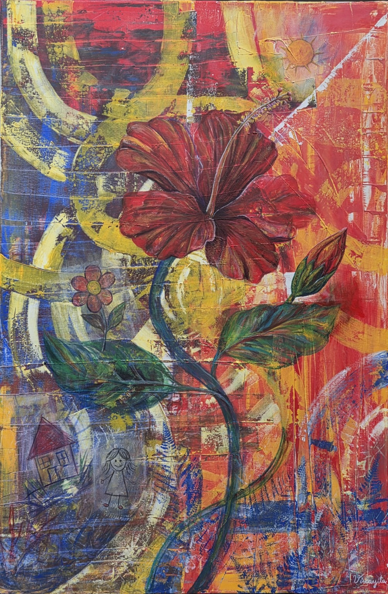
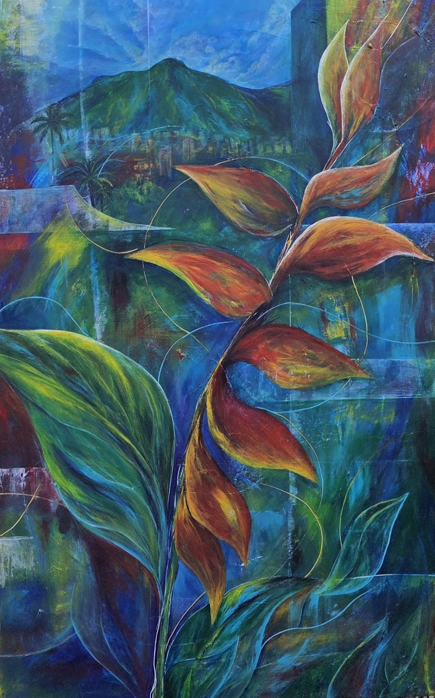
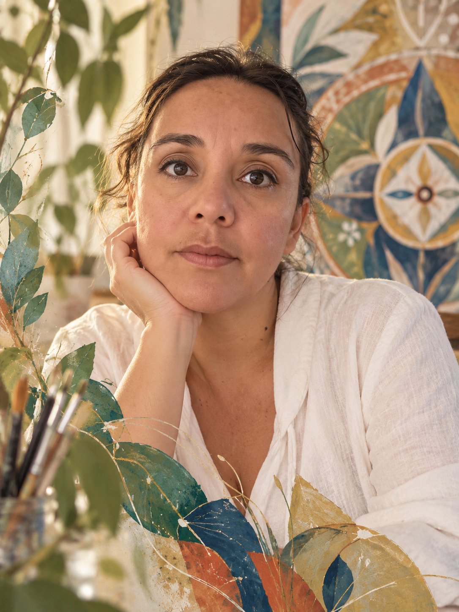

El jardín que permanece
Acrílico sobre lienzo · 2026 · 120 × 80 cm
Un paisaje interior que atraviesa lugares, recuerdos y formas de pertenencia.
En Jardines de la memoria, el recuerdo deja de ser únicamente interior y comienza a expandirse hacia el paisaje. Las flores, las líneas y los espacios imaginarios reúnen fragmentos de identidad, infancia, migración y pertenencia. Venezuela, Chile, Italia y Suiza aparecen como territorios vividos y transformados por la memoria.

Acrílico sobre lienzo · 2026 · 120 × 80 cm

Acrílico sobre lienzo · 2026 · 120 × 80 cm

Acrílico sobre lienzo · 2026 · 120 × 80 cm

Soy Kenia Viscaya, artista visual. Mi práctica nace del encuentro entre imagen, memoria y experiencia. A través de la pintura exploro cómo los lugares que habitamos continúan viviendo en nosotros, incluso cuando nos alejamos de ellos.
Mi recorrido entre Venezuela, Chile, Italia y Suiza atraviesa esta investigación artística: cada territorio deja una forma, un color, una flor o un paisaje que reaparece transformado.
La pintura se construye por capas. Las transparencias, los gestos y las líneas superpuestas dejan visible el rastro de lo anterior, como ocurre con la memoria.
Las flores funcionan como formas de identidad y continuidad; el paisaje aparece como un territorio emocional, más que como una representación literal.
Para información sobre las obras, exposiciones o colaboraciones:
Escribir